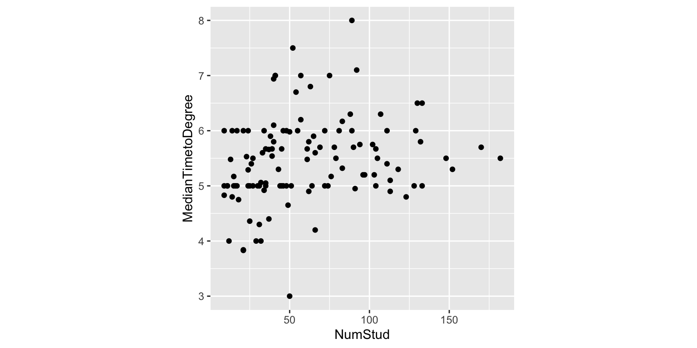
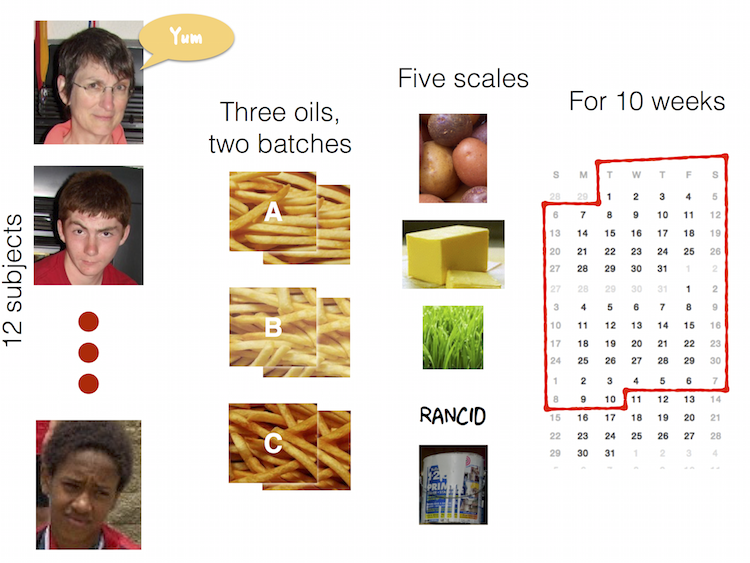
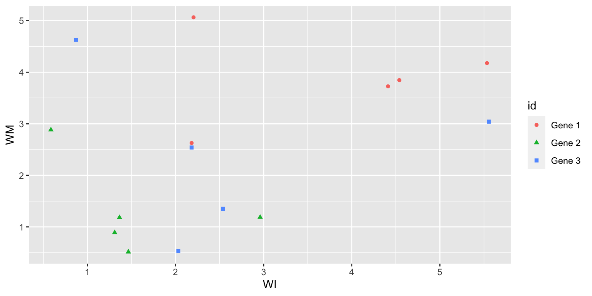
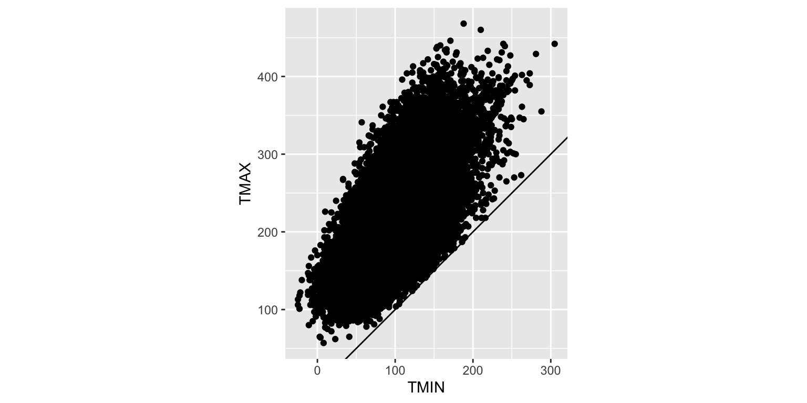
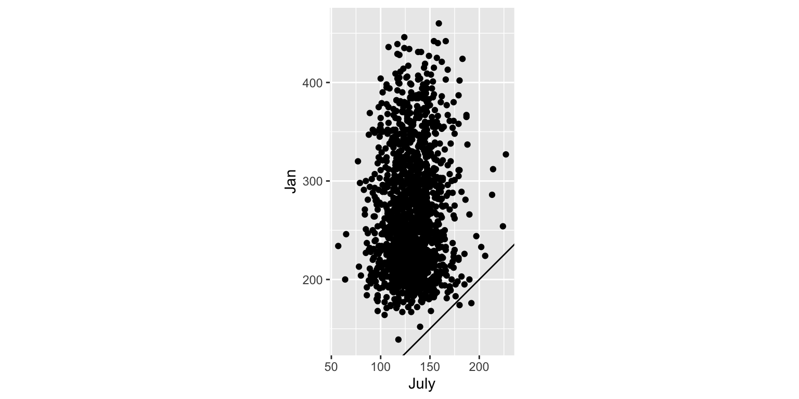
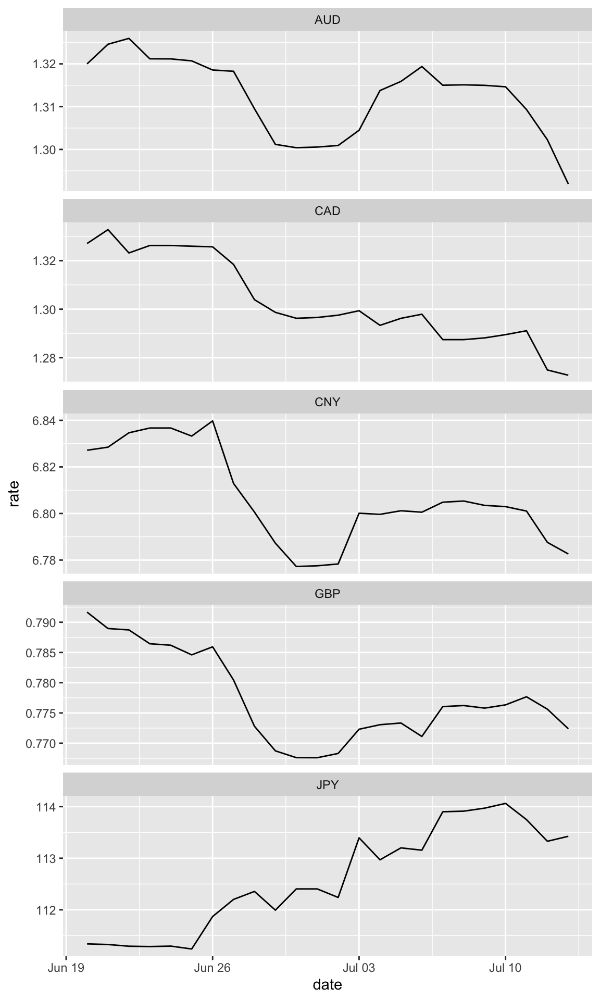

Chapter 4 Tidying Common Data Formats
4.1 Terminology
- A variable is a quantity, quality, or property that you can measure. For the grad programs, these would be all the column headers.
- An observation is a set of measurements made under similar conditions (you usually make all of the measurements in an observation at the same time and on the same object). An observation will contain several values, each associated with a different variable. I’ll sometimes refer to an observation as a data point. For the grad programs, this is institution, and program, uniquley define the observation.
- A value is the state of a variable when you measure it. The value of a variable typically changes from observation to observation.
4.2 Tidy tabular form
Tabular data is a set of values, each associated with a variable and an observation. Tabular data is tidy if each value is placed in its own cell, each variable in its own column, and each observation in its own row.
4.2.1 Wide format
The grad programs data in tabular form. It also is in wide tidy form, because there are multiple columns containing different variables.
library(emo)
library(tidyverse)
grad <- read_csv("data/graduate-programs.csv")
grad %>% top_n(10)
# A tibble: 10 × 16
subject Inst AvNumPubs AvNumCits PctFacGrants PctCompletion
<chr> <chr> <dbl> <dbl> <dbl> <dbl>
1 economics BOSTON UNIVERSITY 0.49 2.66 36.9 34.2
2 economics UNIVERSITY OF CALI… 0.79 2.68 71.4 42.6
3 economics UNIVERSITY OF CHIC… 0.61 3.44 54.8 62.5
4 economics UNIVERSITY OF MARY… 0.61 1.81 50.4 37.9
5 psychology NORTHERN ILLINOIS … 0.92 1.32 45.8 32.1
6 psychology UNIVERSITY OF CALI… 1.42 4.45 72 48.9
7 psychology UNIVERSITY OF CONN… 1.15 3.47 69.5 46.8
8 psychology UNIVERSITY OF FLOR… 1.05 1.72 65.6 34.2
9 psychology UNIVERSITY OF ILLI… 1.39 3.3 57.2 28.1
10 psychology UNIVERSITY OF MINN… 2.02 2.89 69.9 39
# ℹ 10 more variables: MedianTimetoDegree <dbl>, PctMinorityFac <dbl>,
# PctFemaleFac <dbl>, PctFemaleStud <dbl>, PctIntlStud <dbl>,
# AvNumPhDs <dbl>, AvGREs <dbl>, TotFac <dbl>, PctAsstProf <dbl>,
# NumStud <dbl>What’s good about the format?
- Rows contain information about each department of an institution
- Columns contain types of information, like average number of publications, average number of citations, % completion,
It makes it easy to make summaries:
grad %>% count(subject)
# A tibble: 4 × 2
subject n
<chr> <int>
1 astronomy 32
2 economics 117
3 entomology 27
4 psychology 236
grad %>% filter(subject == "economics") %>%
summarise(m=mean(NumStud), s=sd(NumStud))
# A tibble: 1 × 2
m s
<dbl> <dbl>
1 60.7 39.4
grad %>% filter(subject == "economics") %>%
ggplot(aes(x=NumStud, y=MedianTimetoDegree)) +
geom_point() + theme(aspect.ratio=1)
4.2.2 Long format
It can also be useful - for the process of data analysis - to arrange data into long tidy form, where each value is uniquely identified.
grad %>% gather(variable, value, -subject, -Inst)
# A tibble: 5,768 × 4
subject Inst variable value
<chr> <chr> <chr> <dbl>
1 economics ARIZONA STATE UNIVERSITY AvNumPubs 0.9
2 economics AUBURN UNIVERSITY AvNumPubs 0.79
3 economics BOSTON COLLEGE AvNumPubs 0.51
4 economics BOSTON UNIVERSITY AvNumPubs 0.49
5 economics BRANDEIS UNIVERSITY AvNumPubs 0.3
6 economics BROWN UNIVERSITY AvNumPubs 0.84
7 economics CALIFORNIA INSTITUTE OF TECHNOLOGY AvNumPubs 0.99
8 economics CARNEGIE MELLON UNIVERSITY AvNumPubs 0.43
9 economics CITY UNIVERSITY OF NEW YORK GRAD. CENTER AvNumPubs 0.35
10 economics CLAREMONT GRADUATE UNIVERSITY AvNumPubs 0.47
# ℹ 5,758 more rows4.3 Raw data examples
For each of these data examples, let’s try together to identify the variables and the observations - some are HARD!
4.3.1 Gene expression experiment
🤔
genes <- read_csv("data/genes.csv")
genes
# A tibble: 3 × 12
id `WI-6.R1` `WI-6.R2` `WI-6.R4` `WM-6.R1` `WM-6.R2` `WI-12.R1` `WI-12.R2`
<chr> <dbl> <dbl> <dbl> <dbl> <dbl> <dbl> <dbl>
1 Gene 1 2.18 2.20 4.20 2.63 5.06 4.54 5.53
2 Gene 2 1.46 0.585 1.86 0.515 2.88 1.36 2.96
3 Gene 3 2.03 0.870 3.28 0.533 4.63 2.18 5.56
# ℹ 4 more variables: `WI-12.R4` <dbl>, `WM-12.R1` <dbl>, `WM-12.R2` <dbl>,
# `WM-12.R4` <dbl>4.3.2 Melbourne weather
What are the variables? Observations?
😱
melbtemp <- read_fwf("data/ASN00086282.dly",
col_positions=fwf_widths(c(11, 4, 2, 4,
rep(c(5, 1, 1, 1), 31))))
melbtemp %>% select(X1, X2, X3, X4, X5, X9,
X13, X17, X21, X25, X29, X33)
# A tibble: 2,267 × 12
X1 X2 X3 X4 X5 X9 X13 X17 X21 X25 X29 X33
<chr> <dbl> <chr> <chr> <dbl> <dbl> <dbl> <dbl> <dbl> <dbl> <dbl> <dbl>
1 ASN00086282 1970 07 TMAX 141 124 113 123 148 149 139 153
2 ASN00086282 1970 07 TMIN 80 63 36 57 69 47 84 78
3 ASN00086282 1970 07 PRCP 3 30 0 0 36 3 0 0
4 ASN00086282 1970 08 TMAX 145 128 150 122 109 112 116 142
5 ASN00086282 1970 08 TMIN 50 61 75 67 41 51 48 -7
6 ASN00086282 1970 08 PRCP 0 66 0 53 13 3 8 0
7 ASN00086282 1970 09 TMAX 168 168 162 162 162 150 184 179
8 ASN00086282 1970 09 TMIN 19 29 62 81 81 55 73 97
9 ASN00086282 1970 09 PRCP 0 0 0 0 3 5 0 38
10 ASN00086282 1970 10 TMAX 189 194 204 267 256 228 237 144
# ℹ 2,257 more rows4.3.3 TB incidence
This is current tuberculosis data taken from WHO, the case notifications table.
🤧
tb <- read_csv("data/TB_notifications_2018-03-18.csv") %>%
select(country, year, starts_with("new_sp_")) %>%
filter(year>1996, year<2012)
tb %>% top_n(20)
# A tibble: 26 × 22
country year new_sp_m04 new_sp_m514 new_sp_m014 new_sp_m1524 new_sp_m2534
<chr> <dbl> <dbl> <dbl> <dbl> <dbl> <dbl>
1 Argentina 2008 11 58 69 633 611
2 Argentina 2009 8 36 44 546 483
3 Argentina 2011 50 93 143 664 657
4 Bosnia an… 2006 0 0 0 40 58
5 Brazil 2010 130 168 298 4405 6381
6 Central A… 2010 23 55 78 379 633
7 Central A… 2011 14 56 70 362 576
8 Egypt 2008 0 13 13 581 640
9 Greece 2007 0 1 1 21 22
10 Italy 2005 7 1 8 93 191
# ℹ 16 more rows
# ℹ 15 more variables: new_sp_m3544 <dbl>, new_sp_m4554 <dbl>,
# new_sp_m5564 <dbl>, new_sp_m65 <dbl>, new_sp_mu <dbl>, new_sp_f04 <dbl>,
# new_sp_f514 <dbl>, new_sp_f014 <dbl>, new_sp_f1524 <dbl>,
# new_sp_f2534 <dbl>, new_sp_f3544 <dbl>, new_sp_f4554 <dbl>,
# new_sp_f5564 <dbl>, new_sp_f65 <dbl>, new_sp_fu <dbl>4.3.4 French fries
10 week sensory experiment, 12 individuals assessed taste of french fries on several scales (how potato-y, buttery, grassy, rancid, paint-y do they taste?), fried in one of 3 different oils, replicated twice. First few rows:
load("data/french_fries.rda")
french_fries %>% top_n(10)
# A tibble: 12 × 9
time treatment subject rep potato buttery grassy rancid painty
* <fct> <fct> <fct> <dbl> <dbl> <dbl> <dbl> <dbl> <dbl>
1 6 2 19 2 11.1 1.5 0 11.5 12.2
2 8 1 63 2 3.8 0 0 10.5 12.9
3 8 1 86 2 1.4 0 0 8 11.6
4 9 1 63 1 1.7 0 0 13.3 12.8
5 9 2 19 2 6.2 0 0 7.9 12.6
6 9 2 63 1 1.8 0 0 13.7 12.3
7 10 1 31 1 9.5 0 0 10.7 12.6
8 10 1 86 1 0.7 0 0 11.6 11.6
9 10 1 86 2 0.7 0 0 14.3 13.1
10 10 2 86 1 2 0 0 10.4 12.7
11 10 2 86 2 1 0 0 11.2 11.6
12 10 3 19 2 12.2 0 4.6 9.3 11.8
What are the variables? Observations?
4.3.5 Contingency table
This data is collated from this story: 41% Of Fliers Think You’re Rude If You Recline Your Seat
fly <- read_csv("data/fly_tbl.csv")
fly
# A tibble: 3 × 6
Is_it_rude_to_recline `I_recline_seat:Always` `I_recline_seat:Usually`
<chr> <dbl> <dbl>
1 No, not rude at all 124 145
2 Yes, somewhat rude 9 27
3 Yes, very rude 3 3
# ℹ 3 more variables: `I_recline_seat:About half the time` <dbl>,
# `I_recline_seat:Once in a while` <dbl>, `I_recline_seat:Never` <dbl>What are the variables?
4.4 ABS Datapack
The Australian Bureau of Statistics (ABS) collects, maintains and delivers data and official statistics on a wide range of economic, social, population and environmental matters of importance to Australia. There are many different access points for data, but primarily aggregated data is the main type available. Examples at accessing the Census data from the ABS can be found in the eechidna package.
- The individual
csvfiles must be held locally. They come from a zip file and can be downloaded from: https://datapacks.censusdata.abs.gov.au/datapacks/ - Select: 2016 Census Datapacks, General Community Profile, Commonwealth Electoral Divisons
- Download for all of Australia
- Unzip the package - its necessary, because the data is delivered in many small csv files. There is also the license information detailing appropriate usage, and detailed information about the formats.
G1_Main <- read_csv(here::here("data/2016 Census GCP Commonwealth Electoral Divisions for AUST/", "2016Census_G01_AUS_CED.csv"))4.5 Messy vs tidy
Messy data is messy in its own way. You can make unique solutions, but then another data set comes along, and you have to again make a unique solution.
Tidy data can be though of as legos. Once you have this form, you can put it together in so many different ways, to make different analyses and visualizations.

4.6 Tidy verbs
gather: specify the keys (identifiers) and the values (measures) to make long form (used to be called melting)spread: move a variable from a row into columns (used to be called casting)separate: split a character vector into columns
4.7 Tidying genes data
genes
# A tibble: 3 × 12
id `WI-6.R1` `WI-6.R2` `WI-6.R4` `WM-6.R1` `WM-6.R2` `WI-12.R1` `WI-12.R2`
<chr> <dbl> <dbl> <dbl> <dbl> <dbl> <dbl> <dbl>
1 Gene 1 2.18 2.20 4.20 2.63 5.06 4.54 5.53
2 Gene 2 1.46 0.585 1.86 0.515 2.88 1.36 2.96
3 Gene 3 2.03 0.870 3.28 0.533 4.63 2.18 5.56
# ℹ 4 more variables: `WI-12.R4` <dbl>, `WM-12.R1` <dbl>, `WM-12.R2` <dbl>,
# `WM-12.R4` <dbl>
genes_long <- genes %>%
gather(variable, expr, -id)
genes_long
# A tibble: 33 × 3
id variable expr
<chr> <chr> <dbl>
1 Gene 1 WI-6.R1 2.18
2 Gene 2 WI-6.R1 1.46
3 Gene 3 WI-6.R1 2.03
4 Gene 1 WI-6.R2 2.20
5 Gene 2 WI-6.R2 0.585
6 Gene 3 WI-6.R2 0.870
7 Gene 1 WI-6.R4 4.20
8 Gene 2 WI-6.R4 1.86
9 Gene 3 WI-6.R4 3.28
10 Gene 1 WM-6.R1 2.63
# ℹ 23 more rowsIn this example, we identified the columns as containing expression levels of a gene during different experimental conditions (variables). We have gathered these variables into a single column, with the expression levels in a corresponding column. The -id argument to gather() indicates that we do not want the id column to be gathered; this has the effect of repeating the 3 values of gene for each variable.
4.7.1 Separate columns
The variables in the previous example are a cryptic combination of treatment, timepoint, and replicate. Using separate(), we can separate this information out into a tidy (and much more human friendly) representation of the experimental conditions:
genes_long %>%
separate(variable, c("trt", "leftover"), "-")
# A tibble: 33 × 4
id trt leftover expr
<chr> <chr> <chr> <dbl>
1 Gene 1 WI 6.R1 2.18
2 Gene 2 WI 6.R1 1.46
3 Gene 3 WI 6.R1 2.03
4 Gene 1 WI 6.R2 2.20
5 Gene 2 WI 6.R2 0.585
6 Gene 3 WI 6.R2 0.870
7 Gene 1 WI 6.R4 4.20
8 Gene 2 WI 6.R4 1.86
9 Gene 3 WI 6.R4 3.28
10 Gene 1 WM 6.R1 2.63
# ℹ 23 more rowsFirst, we separate the treatment from the rest of the information.
Next, we separate the remainder into timepoint and replicate variables.
genes_long %>%
separate(variable, c("trt", "leftover"), "-") %>%
separate(leftover, c("time", "rep"), "\\.")
# A tibble: 33 × 5
id trt time rep expr
<chr> <chr> <chr> <chr> <dbl>
1 Gene 1 WI 6 R1 2.18
2 Gene 2 WI 6 R1 1.46
3 Gene 3 WI 6 R1 2.03
4 Gene 1 WI 6 R2 2.20
5 Gene 2 WI 6 R2 0.585
6 Gene 3 WI 6 R2 0.870
7 Gene 1 WI 6 R4 4.20
8 Gene 2 WI 6 R4 1.86
9 Gene 3 WI 6 R4 3.28
10 Gene 1 WM 6 R1 2.63
# ℹ 23 more rowsThis data is tidy, in that observations are in rows and variables are in columns, but it is not as easy to read. We can examine the different features of this data set using spread().
4.7.2 Now spread to examine different aspects
There are several different features of the data which we might want to explore. Each feature requires a slight reconfiguration of the dataset, but these are easily accomplished using spread().
4.7.2.1 Examine treatments against each other
genes_long <- genes_long %>%
separate(variable, c("trt", "leftover"), "-") %>%
separate(leftover, c("time", "rep"), "\\.")
genes_long %>%
spread(trt, expr) %>%
ggplot(aes(x=WI, y=WM, colour=id, shape = id)) + geom_point()
Generally, some negative association within each gene, WM is low if WI is high.
4.8 Try this yourself
Here is a little data set to practice gather, spread and separate on.
kb <- read_csv("data/koala_bilby.csv")
kb
# A tibble: 5 × 5
ID koala_NSW koala_VIC bilby_NSW bilby_VIC
<chr> <dbl> <dbl> <dbl> <dbl>
1 grey 23 43 11 8
2 cream 56 89 22 17
3 white 35 72 13 6
4 black 28 44 19 16
5 taupe 25 37 21 12Try to do these by yourself, but the code is in the Rmd file if you need help.
4.8.1 Exercise 1
Gather the data into long form, naming the two new variables, label and count
# A tibble: 20 × 3
ID label count
<chr> <chr> <dbl>
1 grey koala_NSW 23
2 cream koala_NSW 56
3 white koala_NSW 35
4 black koala_NSW 28
5 taupe koala_NSW 25
6 grey koala_VIC 43
7 cream koala_VIC 89
8 white koala_VIC 72
9 black koala_VIC 44
10 taupe koala_VIC 37
11 grey bilby_NSW 11
12 cream bilby_NSW 22
13 white bilby_NSW 13
14 black bilby_NSW 19
15 taupe bilby_NSW 21
16 grey bilby_VIC 8
17 cream bilby_VIC 17
18 white bilby_VIC 6
19 black bilby_VIC 16
20 taupe bilby_VIC 124.8.2 Exercise 2
Separate the labels into two new variables, animal, state
# A tibble: 20 × 4
ID animal state count
<chr> <chr> <chr> <dbl>
1 grey koala NSW 23
2 cream koala NSW 56
3 white koala NSW 35
4 black koala NSW 28
5 taupe koala NSW 25
6 grey koala VIC 43
7 cream koala VIC 89
8 white koala VIC 72
9 black koala VIC 44
10 taupe koala VIC 37
11 grey bilby NSW 11
12 cream bilby NSW 22
13 white bilby NSW 13
14 black bilby NSW 19
15 taupe bilby NSW 21
16 grey bilby VIC 8
17 cream bilby VIC 17
18 white bilby VIC 6
19 black bilby VIC 16
20 taupe bilby VIC 124.8.3 Exercise 3
Spread the long form data into wide form, where the columns are the states.
# A tibble: 10 × 4
ID animal NSW VIC
<chr> <chr> <dbl> <dbl>
1 black bilby 19 16
2 black koala 28 44
3 cream bilby 22 17
4 cream koala 56 89
5 grey bilby 11 8
6 grey koala 23 43
7 taupe bilby 21 12
8 taupe koala 25 37
9 white bilby 13 6
10 white koala 35 724.8.4 Exercise 4
Spread the long form data into wide form, where the columns are the animals.
# A tibble: 10 × 4
ID state bilby koala
<chr> <chr> <dbl> <dbl>
1 black NSW 19 28
2 black VIC 16 44
3 cream NSW 22 56
4 cream VIC 17 89
5 grey NSW 11 23
6 grey VIC 8 43
7 taupe NSW 21 25
8 taupe VIC 12 37
9 white NSW 13 35
10 white VIC 6 724.9 Tidying Melbourne weather
This is seriously messy!
Read the data first, just the columns that we need. The data is in fixed column width format, which means a certain number of columns are designated for the particular records, eg columns 1-11 contains the station id, columns 12-15 contain the year, …
melbtemp <- read_fwf("data/ASN00086282.dly",
col_positions=fwf_widths(c(11, 4, 2, 4,
rep(c(5, 1, 1, 1), 31)),
col_names = c("station", "year", "month",
"variable", paste0("X", 5:128))))
melbtemp
# A tibble: 2,267 × 128
station year month variable X5 X6 X7 X8 X9 X10 X11 X12
<chr> <dbl> <chr> <chr> <dbl> <chr> <chr> <chr> <dbl> <chr> <chr> <chr>
1 ASN0008… 1970 07 TMAX 141 <NA> <NA> a 124 <NA> <NA> a
2 ASN0008… 1970 07 TMIN 80 <NA> <NA> a 63 <NA> <NA> a
3 ASN0008… 1970 07 PRCP 3 <NA> <NA> a 30 <NA> <NA> a
4 ASN0008… 1970 08 TMAX 145 <NA> <NA> a 128 <NA> <NA> a
5 ASN0008… 1970 08 TMIN 50 <NA> <NA> a 61 <NA> <NA> a
6 ASN0008… 1970 08 PRCP 0 <NA> <NA> a 66 <NA> <NA> a
7 ASN0008… 1970 09 TMAX 168 <NA> <NA> a 168 <NA> <NA> a
8 ASN0008… 1970 09 TMIN 19 <NA> <NA> a 29 <NA> <NA> a
9 ASN0008… 1970 09 PRCP 0 <NA> <NA> a 0 <NA> <NA> a
10 ASN0008… 1970 10 TMAX 189 <NA> <NA> a 194 <NA> <NA> a
# ℹ 2,257 more rows
# ℹ 116 more variables: X13 <dbl>, X14 <chr>, X15 <lgl>, X16 <chr>, X17 <dbl>,
# X18 <chr>, X19 <lgl>, X20 <chr>, X21 <dbl>, X22 <chr>, X23 <lgl>,
# X24 <chr>, X25 <dbl>, X26 <chr>, X27 <lgl>, X28 <chr>, X29 <dbl>,
# X30 <chr>, X31 <lgl>, X32 <chr>, X33 <dbl>, X34 <chr>, X35 <lgl>,
# X36 <chr>, X37 <dbl>, X38 <chr>, X39 <lgl>, X40 <chr>, X41 <dbl>,
# X42 <chr>, X43 <lgl>, X44 <chr>, X45 <dbl>, X46 <chr>, X47 <lgl>, …X5, X9, … contain the temperature and precipitation records. The remaining columns have data quality flags. We want to ignore the data quality flags for now, and select every fourth variable.
4.9.1 Sometime easier to index select
[...]allows indexing of elements of a vector, or collection of numbersc(1:4, seq(5,128,4))means collect items 1 through 4, and then every 4th item until the 128’th
melbtemp <- melbtemp[,c(1:4, seq(5, 128, 4))]
melbtemp
# A tibble: 2,267 × 35
station year month variable X5 X9 X13 X17 X21 X25 X29 X33
<chr> <dbl> <chr> <chr> <dbl> <dbl> <dbl> <dbl> <dbl> <dbl> <dbl> <dbl>
1 ASN0008… 1970 07 TMAX 141 124 113 123 148 149 139 153
2 ASN0008… 1970 07 TMIN 80 63 36 57 69 47 84 78
3 ASN0008… 1970 07 PRCP 3 30 0 0 36 3 0 0
4 ASN0008… 1970 08 TMAX 145 128 150 122 109 112 116 142
5 ASN0008… 1970 08 TMIN 50 61 75 67 41 51 48 -7
6 ASN0008… 1970 08 PRCP 0 66 0 53 13 3 8 0
7 ASN0008… 1970 09 TMAX 168 168 162 162 162 150 184 179
8 ASN0008… 1970 09 TMIN 19 29 62 81 81 55 73 97
9 ASN0008… 1970 09 PRCP 0 0 0 0 3 5 0 38
10 ASN0008… 1970 10 TMAX 189 194 204 267 256 228 237 144
# ℹ 2,257 more rows
# ℹ 23 more variables: X37 <dbl>, X41 <dbl>, X45 <dbl>, X49 <dbl>, X53 <dbl>,
# X57 <dbl>, X61 <dbl>, X65 <dbl>, X69 <dbl>, X73 <dbl>, X77 <dbl>,
# X81 <dbl>, X85 <dbl>, X89 <dbl>, X93 <dbl>, X97 <dbl>, X101 <dbl>,
# X105 <dbl>, X109 <dbl>, X113 <dbl>, X117 <dbl>, X121 <dbl>, X125 <dbl>4.9.2 Make long form
melbtemp_long <- melbtemp %>%
gather(day, value, X5:X125)
melbtemp_long
# A tibble: 70,277 × 6
station year month variable day value
<chr> <dbl> <chr> <chr> <chr> <dbl>
1 ASN00086282 1970 07 TMAX X5 141
2 ASN00086282 1970 07 TMIN X5 80
3 ASN00086282 1970 07 PRCP X5 3
4 ASN00086282 1970 08 TMAX X5 145
5 ASN00086282 1970 08 TMIN X5 50
6 ASN00086282 1970 08 PRCP X5 0
7 ASN00086282 1970 09 TMAX X5 168
8 ASN00086282 1970 09 TMIN X5 19
9 ASN00086282 1970 09 PRCP X5 0
10 ASN00086282 1970 10 TMAX X5 189
# ℹ 70,267 more rowsThis is basically what we need. The day variable doesn’t have the right values in it, but we can fix this later.
4.9.3 Use spread to look at different things
But there are a couple of things that I need to fix to make it possible to do these plots. We will discuss these operations next week.
melbtemp_long <- melbtemp_long %>%
filter(variable %in% c("TMIN", "TMAX", "PRCP")) %>%
mutate(value = ifelse(value == -9999, NA, value))4.9.4 What are the numbers?
- What is the range of temperature and precipitation?
- What units could this be in?
- Why are some values -9999?
Go to the data source: https://www1.ncdc.noaa.gov/pub/data/ghcn/daily/readme.txt
4.9.5 Now use spread
4.9.5.1 Max vs Min
melbtemp_long %>% spread(variable, value) %>%
ggplot(aes(x=TMIN, y=TMAX)) + geom_point() +
coord_equal() + geom_abline(slope=1, intercept=0)
Oh, TMAX is always higher than TMIN. This is a good thing.
4.9.5.2 Winter vs Summer
melbtemp_long %>%
filter(variable == "TMAX") %>%
spread(month, value) %>%
ggplot(aes(x=`07`, y=`01`)) + geom_point() +
xlab("July") + ylab("Jan") +
coord_equal() + geom_abline(slope=1, intercept=0)
Same day of the month, same year, January has higher maximum temperatures than July. Except two days, the July max exceeded the January max. (This comparison is a bit whacky, though right?)
4.10 Exercises
- 41% Of Fliers Think You’re Rude If You Recline Your Seat. In the following table, V1 is a response to the question “Is it rude to recline your seat on a plane?”, and V2 is the response to the question “Do you ever recline your seat when you fly?”. The data is in the form of a contingency table.
fly_tbl <- read_csv("data/fly_tbl.csv")
fly_tbl
# A tibble: 3 × 6
Is_it_rude_to_recline `I_recline_seat:Always` `I_recline_seat:Usually`
<chr> <dbl> <dbl>
1 No, not rude at all 124 145
2 Yes, somewhat rude 9 27
3 Yes, very rude 3 3
# ℹ 3 more variables: `I_recline_seat:About half the time` <dbl>,
# `I_recline_seat:Once in a while` <dbl>, `I_recline_seat:Never` <dbl>- What are the variables and observations in this data?
- Put the data in tidy long form (using the names
V2as the key variable, andcountas the value).
You can get the data from data/fly_tbl.csv
- Your job is to tidy the TB incidence data.
- Write down the steps that will be needed go from raw data to tidy
- Write the code piece by piece
You can get the data from TB_notifications_2018-03-18.csv
- For the data set,
rates.csv,
rates <- read_csv("data/rates.csv")
head(rates)
# A tibble: 6 × 169
date AED AFN ALL AMD ANG AOA ARS AUD AWG AZN BAM
<date> <dbl> <dbl> <dbl> <dbl> <dbl> <dbl> <dbl> <dbl> <dbl> <dbl> <dbl>
1 2017-06-20 3.67 68.1 119. 481. 1.78 166. 16.1 1.32 1.80 1.7 1.76
2 2017-06-21 3.67 68.1 119. 480. 1.78 166. 16.2 1.32 1.79 1.7 1.75
3 2017-06-22 3.67 68.1 119. 481. 1.78 166. 16.1 1.33 1.79 1.7 1.75
4 2017-06-23 3.67 68.1 118. 479. 1.78 166. 16.2 1.32 1.80 1.7 1.75
5 2017-06-24 3.67 68.1 118. 479. 1.78 166. 16.2 1.32 1.80 1.7 1.75
6 2017-06-25 3.67 67.9 118. 479. 1.78 166. 16.1 1.32 1.80 1.7 1.75
# ℹ 157 more variables: BBD <dbl>, BDT <dbl>, BGN <dbl>, BHD <dbl>, BIF <dbl>,
# BMD <dbl>, BND <dbl>, BOB <dbl>, BRL <dbl>, BSD <dbl>, BTC <dbl>,
# BTN <dbl>, BWP <dbl>, BYN <dbl>, BZD <dbl>, CAD <dbl>, CDF <dbl>,
# CHF <dbl>, CLF <dbl>, CLP <dbl>, CNH <dbl>, CNY <dbl>, COP <dbl>,
# CRC <dbl>, CUC <dbl>, CUP <dbl>, CVE <dbl>, CZK <dbl>, DJF <dbl>,
# DKK <dbl>, DOP <dbl>, DZD <dbl>, EGP <dbl>, ERN <dbl>, ETB <dbl>,
# EUR <dbl>, FJD <dbl>, FKP <dbl>, GBP <dbl>, GEL <dbl>, GGP <dbl>, …- What are the variables and observations?
- Gather the five currencies, AUD, GBP, JPY, CNY, CAD, make it into tidy long form.
- Make line plots of the currencies, like the plot below, and describe the similarities and differences between the currencies.
You can get the data from rates.csv

- This is tough! From the web site Department of Infrastructure, Regional Development and Cities download the latest “Airport Traffic Data 1985–86 to …”. It is reasonably small.
Extract the “Airport Passengers” table into R with this code
library(readxl)
passengers <- read_xlsx(here::here("data", "WebAirport_FY_1986-2019.xlsx"), sheet=3, skip=6)
passengers
# A tibble: 3,468 × 14
...1 AIRPORT Year Rank INBOUND...5 OUTBOUND...6 TOTAL...7 INBOUND...8
<chr> <chr> <chr> <chr> <dbl> <dbl> <dbl> <dbl>
1 TOTAL AUS… TOTAL … 1985… - 14543928 14543928 29087856 2767413
2 TOTAL AUS… TOTAL … 1986… - 15001877 15001877 30003754 3154920
3 TOTAL AUS… TOTAL … 1987… - 16181355 16181355 32362710 3692976
4 TOTAL AUS… TOTAL … 1988… - 16497749 16497826 32995575 4022634
5 TOTAL AUS… TOTAL … 1989… - 11861519 11861644 23723163 4175315
6 TOTAL AUS… TOTAL … 1990… - 16536767 16536767 33073534 4257165
7 TOTAL AUS… TOTAL … 1991… - 20525193 20525193 41050386 4539042
8 TOTAL AUS… TOTAL … 1992… - 20923187 20923187 41846374 4902693
9 TOTAL AUS… TOTAL … 1993… - 22668912 22668912 45337824 5340017
10 TOTAL AUS… TOTAL … 1994… - 25091352 25091227 50182579 5830311
# ℹ 3,458 more rows
# ℹ 6 more variables: OUTBOUND...9 <dbl>, TOTAL...10 <dbl>, INBOUND...11 <dbl>,
# OUTBOUND...12 <dbl>, TOTAL...13 <dbl>, ...14 <lgl>Tidy the data, to produce a data set with these columns - airport: all of the airports. - year - type_of_flight: DOMESTIC, INTERNATIONAL - bound: IN or OUT